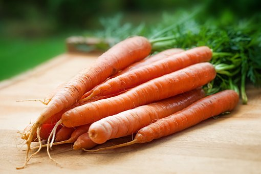
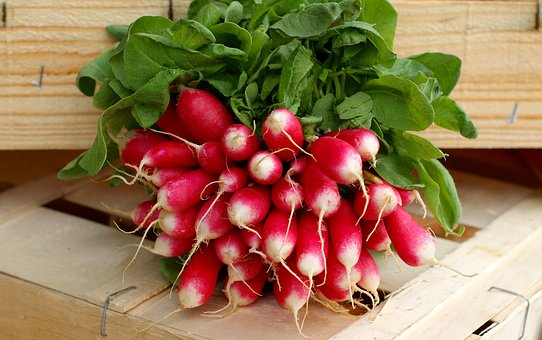

湘南 辻堂でスタートしたお料理教室「MARY'S COOKINGは旬のお野菜を中心に、
オーガニックFarmからのお野菜も利用して、体と心に優しいお料理を楽しく作る お料理教室です。
クラスでは、マクロビオティックをベースとした素材を活かした創作料理をご紹介します。
お料理の基本を身につけていただきながら、楽しくお料理できます。
また、少人数制なのでわからないことも質問していただきやすと環境です。
春休み、夏休みは、Kid's Lessonも開催しています。親子でお楽しみいただけます。

有機野菜人参 produced by MARY'S Farm

有機野菜ラディッシュ produced by Mary's Farm